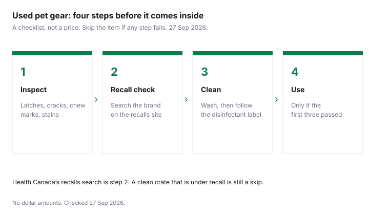

Pets · Canada
Secondhand Pet Gear in Canada: Crates, Beds and Carriers You Can Buy Used
Hard crates, stainless or ceramic bowls, rigid carriers and gates are usually safe to buy used in Canada if the hardware is intact and the item is not on a Health Canada recall. Skip worn harnesses and chewed toys. New owners buy a room of gear before the animal has slept in the house. A lot of that gear is a hard object someone else already bought: a crate, a bowl, a carrier, a gate. Some of it should stay in the last house: a chewed toy, a stretched harness, a bed that smells like urine, anything on a recall list. This page is a buy-or-skip list for Canada, a cleaning step that does not invent a dilution, and a mandatory look at Health Canada’s recalls search. No used-market price was checked 27 Sep 2026. Education only. This is not veterinary advice.
Key takeaways
- Hard crates, stainless or ceramic bowls, rigid carriers, and gates are the items this page treats as usually workable used, if the hardware is intact and the item is not recalled.
- Skip worn harnesses, chewed toys, and anything under a Health Canada recall. A soft bed is reasonable only if the cover washes and the foam is not soaked.
- The order is inspect, search recalls-rappels.canada.ca, clean, then use. A clean item that is recalled is still a skip.
- No secondhand price is listed here. Saving is the new price you did not pay, which you write down yourself.
- General used-buying habits live on the household used-goods guide. This page does not repeat them as a pet-specific law.
What's usually safe to buy used: crates, bowls, carriers, gates
The workable used purchases are the ones you can see through. A wire or plastic crate with straight bars, a floor that is still attached, and a latch that closes is a crate.
A dent is a question. A broken weld or a door that springs open is a no. Stainless bowls and ceramic bowls that are not cracked can be washed. A plastic bowl with deep tooth grooves holds grime in the grooves; skip it if you cannot get the surface smooth. A rigid carrier is reasonable when the latches catch, the vents are open, and the shell is not cracked through. Squeeze the handle. If it flexes like it will let go on a staircase, it is not a carrier. A pressure gate or a hardware-mounted gate is reasonable when the mechanism still locks and you can fit it to your doorway without forcing stripped screws.
Beds are in the title because people ask. They are not in the “usually” sentence with crates. A bed with a cover you can wash, and foam that is not soaked, stained through, or crumbling, can be a used buy. If you cannot wash it, or the foam smells after a wash, skip it. You are not saving the cost of a skin problem. The dog cost guide prints OVMA 2025 lines you can set beside a used price you actually see: crate $178 and bed $78 in the puppy year, collar and leash $55, toys $83. Those are new-item averages on an Ontario sheet, not Kijiji. If a used crate is $40 and intact and not recalled, the gap versus $178 is the saving. If it is recalled, the gap is irrelevant. The supply-list guide says which of these you need on day one.
What to skip: worn harnesses, chewed toys, recalled items
A harness and a collar are fit and stitching. A used one has already stretched to someone else’s dog.
You cannot see a weakened stitch the way you can see a bent crate bar. Skip worn harnesses, stretched collars, and leashes with a clip that does not spring back. Buy the thing that fits this animal, new, and replace it when the fit changes. The OVMA puppy line for collar and leash is $55. That is not an order to spend $55. It is a ceiling that makes a $15 new collar, if you find one that fits, an ordinary purchase rather than a place to gamble on a frayed strap.
Chewed toys are a skip. You cannot see whether the missing piece was swallowed by the last dog, and a cracked edge is a mouth injury waiting for the next one. Plush that cannot be washed is a skip. Recalled items are a skip even when they look perfect. The recall is the defect you cannot see from the curb. The emergency vet guide is the visit a swallowed fragment can become. Do not buy the toy to find out.
Cleaning and disinfecting secondhand gear
Wash first. Loose hair, food, and dirt block whatever you use next.
Hot water and dish soap, then a rinse, then a dry, is the step this page will stand behind without a lab. If you use a disinfectant, follow the contact time and the surface list on that product’s label, and do not mix it with another chemical. This guide does not cite a Health Canada dilution written for pet crates, so it does not print millilitres of bleach per litre of water. A number copied from memory would be an invented recipe. The used-household guide is the general habit for secondhand goods in the house. Use it for the non-pet questions, and still do the pet recall search below.
Fabric that survives a wash can go through the washer on the hottest cycle the label allows. Foam that stays damp will smell again. Carriers and crates need the latch tested after they are dry, not before, because a wet plastic latch can fool you. Bowls should be washed as you would wash a dish you eat from. If the surface is pitted, replace the bowl. The food guide assumes a bowl you trust. A cracked bowl is not a unit-price problem.
Where to look: marketplaces, buy-nothing groups, rescues
In Canada the ordinary places are local online marketplaces, neighbourhood groups, and Buy Nothing groups. The Buy Nothing guide is how those groups work as a household habit.
A free crate is still a crate you inspect and still a crate you search. A rescue or shelter sometimes sells or gives away donated supplies. This page does not cite a national list of which shelters do that. Phone and ask. Do not assume a donation bin is a shop. Meet in a public place for a marketplace sale, and do not pay for an item you have not opened and latched yourself.
The where-to-buy guide is the new-goods side: shipping minimums, loyalty, and who price-matches. Use it when the used item fails the checklist and you need a new one. The vet-bill guide is not a gear guide. It is the reminder that a cheap toy which becomes an emergency visit was not cheap. No marketplace fee or “average used crate” is listed here, so none is printed.
Checking recalls (Health Canada)
Before you pay, and again before the item comes inside, search the brand and the product name on Health Canada’s recalls and safety-alerts site, recalls-rappels.canada.ca. The English homepage, checked 27 Sep 2026, is a search of alerts and recalls across product types, not a pet-only list.
Search the words on the label, not the word “crate” alone. If a result matches the item in your hands, do not buy it and do not use it. A seller who says “it was recalled but they fixed those” is not the recall page. Read the recall. The homepage on the day it was checked was showing unrelated recent alerts. Those alerts are not evidence that pet gear is, or is not, under recall. Only a search of the item is.
Also look for a missing label. An item with no brand and no model cannot be searched properly. That is a reason to skip it when the category is something an animal sleeps in or rides in, not a reason to “risk it” because the price is low. Report a problem you discover through the same site’s report path if you are the person who finds a hazard. This page does not walk that form.
Checklist
| Item | Usual call | Why |
|---|---|---|
| Wire or plastic crate | Buy used if intact | You can see the bars, the floor, and the latch. Then search the brand. |
| Stainless or ceramic bowl | Buy used if not cracked | A smooth surface can be washed. Pits and cracks are a skip. |
| Rigid carrier | Buy used if latches and handle hold | This is a piece of safety equipment. A soft bag with a torn seam is not. |
| Gate | Buy used if it still locks | A gate that does not lock is not a gate. Check the mounting hardware. |
| Washable bed | Only if the cover washes and the foam is dry and intact | Smell and soaked foam do not improve because the price was low. |
| Harness, collar, leash | Skip if worn. Prefer new for the fit. | Stitching and stretch are the failure, and they are hard to see. |
| Chewed or plush toy | Skip | Missing pieces and unwashed fabric are not a bargain. |
| Anything on a matching recall | Skip | The defect is why the recall exists. Cleaning does not lift it. |

Sources & date stamps
- Health Canada, Find recalls, advisories and safety alerts, recalls-rappels.canada.ca/en, checked 27 Sep 2026. Use the search for the brand and product. Recent alerts on the homepage were not pet-gear findings and are not cited as such.
- Ontario Veterinary Medical Association, 2025 canine PDF, checked 27 Sep 2026. Puppy-year crate $178, bed $78, collar and leash $55, toys $83. New-item averages, not used prices.
- No disinfectant dilution for crates is listed here. No marketplace price is listed here.
Frequently asked questions
Is it safe to buy a used dog crate?
It can be, when the bars, floor, and latch are intact and a search of the brand and model on recalls-rappels.canada.ca does not match the crate in front of you. A bent door or a latch that opens when you shake it is not a saving. Wash it before the dog uses it. This page does not cite a rule that every used crate is safe, and it does not list a typical used price.
What pet items shouldn't be bought used?
Skip worn harnesses, stretched collars, leashes with a dead clip, chewed toys, plush you cannot wash, beds with soaked foam, cracked bowls, and anything that matches a Health Canada recall. A soft carrier with a torn seam is a skip. The usual used candidates are hard crates, sound bowls, rigid carriers with working latches, and gates that still lock.
How do I disinfect used pet gear?
Wash off hair and dirt with hot water and dish soap, rinse, and dry, and if you use a disinfectant, follow the contact time on that product’s label and do not mix it with another chemical. This guide does not cite a Health Canada dilution written for pet crates, so it does not print one. Fabric goes through a wash the label allows, and foam that stays damp should be skipped. Test the latch again after it is dry.
Where can I find used pet supplies?
Local online marketplaces, neighbourhood groups, and Buy Nothing groups are the ordinary Canadian places, and some rescues sell or give away donated gear if you ask. A free item still gets the inspect-and-recall steps, and no directory of shelters or typical used price is listed here. The household used-goods guide covers the general secondhand habits. The pet recall search is extra.
How do I check for pet product recalls?
Open recalls-rappels.canada.ca and search the brand and the product name printed on the item, before you pay and again before you use it. The site is Health Canada’s recalls and safety alerts search, not a pet-only list, and if a result matches, do not buy the item. An item with no brand cannot be searched properly, which is a reason to skip it when an animal will sleep in it or ride in it. This page does not list current pet recalls, because the homepage changes and a stale list would be worse than the search.
Researched and drafted with AI assistance and fact-checked against official Canadian sources. How we create content.